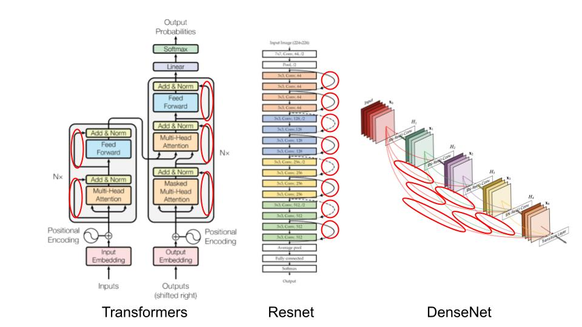
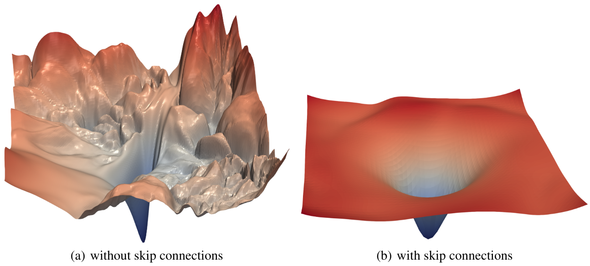

Residual Connections#
Residual connections, also known as skip connections, were introduced in the paper Deep Residual Learning for Image Recognition. This technique enabled the use of deep networks, which was not really possible before.
Since then, residual connections are everywhere:

In this course, we will see why these residual connections are so important and understand their benefits intuitively. This notebook is inspired by the fastai course.
Intuition#
The article on residual connections starts with an observation: Even when using batch normalization, a deep network with more layers performs worse than a shallower network (assuming other parameters are the same and for a network already relatively deep, for example 20 layers). This phenomenon occurs both on training and validation data, so it is not an overfitting issue.

Figure from the original article.
Intuitively, this seems quite odd. Imagine replacing our 36 additional layers with identity functions (which do not transform the input). In this case, the 56-layer network should perform as well as the 20-layer network. However, in practice, this is not the case, and optimization cannot even transform these 36 layers into identities.
One way to understand residual connections is to consider that they directly add the identity to the transformation. Instead of the classic x=layer(x), we use x=x+layer(x). In practice, adding these skip connections allows for much better optimization.
Another way to see things, which explains the term “residual,” is to consider the transformation as y=x+layer(x), which is equivalent to y-x=layer(x). The model no longer aims to predict \(y\), but rather to minimize the difference between the desired output and the input. This is where the term “residual” comes from, meaning “the remainder of the subtraction.”
The universal approximation theorem states that a sufficiently large neural network can learn any function. However, there is a huge gap between what is theoretically possible and what we can achieve in practice. Much of the research in deep learning aims to reduce this gap, and residual connections represent a major advancement in this direction.
The ResNet Block#
To delve a bit deeper, let’s take the example of the ResNet block, which is the first version of residual connections and applies to convolutional neural networks. Instead of having x=x+conv(x) at each step, we have x=x+conv2(conv1(x)), which corresponds to this figure:

With convolutional networks, we want to decrease the resolution and increase the number of filters with the depth of the network. Residual connections do not allow this, as we cannot sum tensors of different sizes. In practice, we can modify the tensor from the residual connection:
To decrease the resolution, simply apply a pooling operation (Max or Average).
To increase the number of filters, use a convolution with filters of size \(1 \times 1\), which corresponds to a simple dot product.
\(1 \times 1\) Convolution: Compared to a classic convolution, the \(1 \times 1\) convolution simplifies the transformation of the image channels without mixing spatial information. It primarily functions as a dimensionality reduction or channel adjustment operation.
Here’s how we could implement the ResNet block in PyTorch:
import torch.nn as nn
import torch.nn.functional as F
class ResBlock(nn.Module):
def __init__(self, ni, nf, stride=1):
self.convs = nn.Sequential(
nn.Conv2d(ni, nf, kernel_size=3, stride=1, padding=1),
nn.ReLU(),
nn.Conv2d(nf, nf, kernel_size=3, stride=1, padding=1)
)
# Si le nombre de filtre de l'entrée et de la sortie ne sont pas les mêmes
self.idconv = nn.Identity() if ni==nf else nn.Conv2d(ni, nf, kernel_size=1, stride=1)
# Si le stride est différent de 1, on utilise une couche de pooling (average)
self.pool =nn.Identity() if stride==1 else nn.AvgPool2d(2, ceil_mode=True)
def forward(self, x):
return F.relu(self.convs(x) + self.idconv(self.pool(x)))
Note: The activation function is used after adding the residual part, as we consider the ResNet block as a separate layer.
The example of residual connections illustrates the importance for researchers to practice and experiment with neural networks, rather than limiting themselves to theory.
In practice, it has been demonstrated in the paper Visualizing the Loss Landscape of Neural Nets that residual connections have the effect of smoothing the loss function, which explains why optimization works much better.

Note on the Bottleneck Block#
Another type of block was introduced in the paper Deep Residual Learning for Image Recognition. This is the bottleneck block, which looks like this:

On the left, the basic ResNet block, and on the right, the bottleneck block.
This block contains more convolutions but is actually faster than the basic ResNet block, thanks to the \(1 \times 1\) convolutions which are very fast. The big advantage of this block is that it allows increasing the number of filters without increasing processing time (and even reducing it). This is the block used for the deepest versions of ResNet (50, 101, and 152 layers), while the basic block is used for the less deep versions (18 and 34 layers).
Note: In practice, if we use bottleneck layers on less deep architectures (18 and 34 layers), we generally get better results than with the classic ResNet blocks. Yet, in the literature, most people continue to use the version with the ResNet block. Sometimes, habits remain ingrained, but this shows the importance of questioning the “things everyone knows.”
In conclusion, residual layers are a major advancement in deep learning. It is advisable to use them as soon as your network starts to become deep.